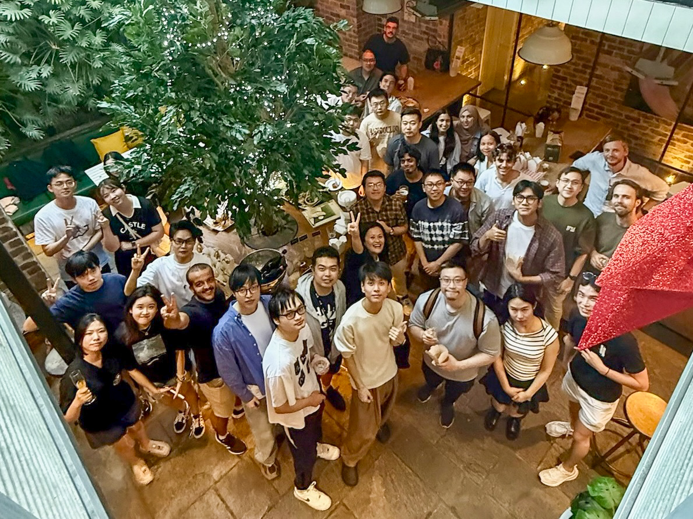

About
I am a Professor in the School of Computer Science and Engineering at the University of New South Wales (UNSW) Sydney, where I also serve as the Deputy Director (Engagement) of the UNSW AI Institute.
My work focuses on multimodal machine learning and foundation models for time-series and spatio-temporal data; robust and trustworthy machine learning; continual learning and post-tuning; and applications of AI for transport, energy, sustainability, and public health. I build robust models that predict, recommend, and optimise from real-world data — the AI most exposed to dynamic, noisy and shifting data distributions — with methods that keep these systems dependable.
I am a member of the Australian Academy of Science's National Committee for Information and Computing Sciences and a member of the Australian Research Council (ARC) College of Experts. I am a Vice Chair of the IEEE Task Force on AI for Time-Series and Spatio-Temporal Data. I serve on the editorial boards of ACM TIST, ACM TSAS, PACM IMWUT, Machine Learning, and Nature Scientific Data, and have served as Area Chair for NeurIPS, ICLR, ACL, KDD, and WWW.
My research has translated into tangible impact. For example, a granted US patent with Microsoft and productivity features in Microsoft 365 and To Do; mobility flow forecasting deployed by the City of Melbourne; smart parking with Mornington Peninsula Shire; the NSW Digital Infrastructure Energy Flexibility datasets and the NeurIPS 2024 Brick-by-Brick Challenge; and SensorLLM, aligning large language models with wearable sensors for trustworthy activity recognition.
News
- 2026Named among the women shaping Australia's AI landscape by Women's Agenda. New papers at ICLR 2026 (DRIFT-Net), ACL 2026 (SOCIA-EVO), and The Web Conference 2026.
- 2026General Co-Chair, PAKDD 2026.
- 2025Named in the World's Top 2% Scientists (Stanford/Elsevier) for both career-long and single-recent-year impact.
- 2025Best Research Paper at ACM SIGSPATIAL 2025 (XXLTraffic); Best Paper (Research Track) at ECML-PKDD 2025 (PAR-AdvGAN); led the 3rd-placed team at the Meta CRAG Multimodal Challenge, KDD Cup 2025.
- 2025Appointed Vice Chair, IEEE Task Force on AI for Time-Series and Spatio-Temporal Data, and Editor, Nature Scientific Data. SensorLLM accepted at EMNLP 2025.
- 2025Appointed member of the Australian Academy of Science's National Committee for Information and Communication Sciences.
- 2024Released the Building Time-Series (BTS) dataset at NeurIPS 2024 and the Brick-by-Brick Challenge (1,800+ submissions). Keynote at ACM SIGSPATIAL 2024.
Research
My group — Context Recognition and Urban Intelligence (CRUISE) — develops foundational AI methods for complex, long-horizon reasoning over real-world observations, and translates them into deployed systems across transport, energy, health, and the built environment. Current directions:
Foundation models for time-series & spatio-temporal data
LLMs and foundation models for forecasting, simulation, and reasoning over temporal, trajectory, and multimodal sensor data.
Robust, self-supervised & continual learning
Data- and label-efficient pretraining, change-point and anomaly detection, and learning that adapts to drift and open-world shift.
Trustworthy & explainable AI
Fairness, robustness, counterfactual explanations, and accountability for automated decision-making systems.
Multimodal & ubiquitous computing
Wearables, IoT, and human behaviour modelling for activity, engagement, and physiological sensing.
AI for transport & smart cities
Mobility forecasting, trajectory modelling, routing, and urban operations with city and government partners.
AI for energy, health & sustainability
Building energy flexibility, carbon performance, climate downscaling, and epidemic modelling.
Selected & Pioneering Work
Publications by Theme
Foundation Models & LLMs for Time-Series and Spatio-Temporal Data
LLMs and foundation models for forecasting, simulation, recommendation, and reasoning over temporal, trajectory, and multimodal data.
- PromptCast: A new prompt-based learning paradigm for time series forecasting. Xue & Salim. IEEE TKDE, 2023.
- SensorLLM: Human-intuitive alignment of multivariate sensor data with LLMs for activity recognition. Li, Deldari, Chen, Xue & Salim. EMNLP, 2025.
- Foundation models for spatio-temporal data science: A tutorial and survey. Liang et al. ACM SIGKDD, 2025.
- DRIFT-Net: A spectral-coupled neural operator for PDEs learning. Li & Salim. ICLR, 2026.
- SOCIA-EVO: Automated simulator construction via dual-anchored bi-level optimization. Hua et al. ACL, 2026.
- Beyond single pass, looping through time: KG-IRAG with iterative knowledge retrieval. Yang, Xue, Razzak & Salim. The Web Conference (WWW), 2026.
- Beyond words: Integrating theory of mind into conversational agents. Jafari, Hua, Xue & Salim. Findings of ACL, 2025.
- TrajLLM: A modular LLM-enhanced agent-based framework for realistic human trajectory simulation. Ju et al. The Web Conference (WWW), 2025.
- Large language models for next point-of-interest recommendation. Li, de Rijke, Xue, Ao, Song & Salim. ACM SIGIR, 2024.
- MAPLE: Mobile app prediction leveraging large language model embeddings. Khaokaew, Xue & Salim. PACM IMWUT, 2024.
- Spatiotemporal pre-trained large language model for forecasting with missing values. Fang, Xiang, Pan, Salim & Chen. IEEE IoT Journal, 2025.
- Towards expressive spectral-temporal graph neural networks for time series forecasting. Jin et al. IEEE TPAMI, 2025.
- Transforming urban dynamics: Harnessing large language models for smarter mobility. Xue, Jin, Pan & Salim. IEEE Intelligent Systems, 2025.
- Prompt mining for language models-based mobility flow forecasting. Xue, Tang, Payani & Salim. ACM SIGSPATIAL, 2024.
- Leveraging language foundation models for human mobility forecasting. Xue, Voutharoja & Salim. ACM SIGSPATIAL, 2022.
- Translating human mobility forecasting through natural language generation. Xue, Salim, Ren & Clarke. ACM WSDM, 2022.
- Artificial general intelligence for human mobility (vision paper). Xue & Salim. ACM SIGSPATIAL, 2023.
- Spectraformer: A unified random feature framework for transformer. Nguyen, Yin, Joshi & Salim. ACM TIST, 2026.
Robust, Self-Supervised & Continual Learning
Label- and data-efficient pretraining, change-point and anomaly detection, irregular and streaming time-series, and learning under drift and open-world shift.
- Time series change point detection with self-supervised contrastive predictive coding (TS-CP2). Deldari, Smith, Xue & Salim. The Web Conference (WWW), 2021.
- COCOA: Cross-modality contrastive learning for sensor data. Deldari, Xue, Saeed, Smith & Salim. PACM IMWUT, 2022.
- CroSSL: Cross-modal self-supervised learning for time-series through latent masking. Deldari et al. ACM WSDM, 2024.
- ODEStream: A buffer-free online learning framework with ODE-based adaptor for streaming time series forecasting. Abushaqra, Xue, Ren & Salim. TMLR, 2025.
- SeqLink: A robust neural-ODE architecture for modelling partially observed time series. Abushaqra, Xue, Ren & Salim. TMLR, 2024.
- ViLCo-Bench: Video language continual learning benchmark. Tang, Deldari, Xue, De Melo & Salim. NeurIPS, 2024.
- Continually learning out-of-distribution spatiotemporal data for robust energy forecasting. Prabowo, Chen, Xue, Sethuvenkatraman & Salim. ECML-PKDD, 2023.
- Navigating out-of-distribution electricity load forecasting during COVID-19. Prabowo et al. ACM BuildSys, 2023.
- Traffic forecasting on new roads using spatial contrastive pre-training (SCPT). Prabowo, Xue, Shao, Koniusz & Salim. Data Mining and Knowledge Discovery, 2024.
- Self-supervised activity representation learning with incremental data. Liu, Deldari, Xue, Nguyen & Salim. IEEE MDM, 2023.
- Federated self-supervised learning of multisensor representations for embedded intelligence. Saeed, Salim, Ozcelebi & Lukkien. IEEE IoT Journal, 2020.
- Detecting change intervals with isolation distributional kernel. Cao et al. JAIR, 2024.
- ESPRESSO: Entropy and shape aware time-series segmentation for heterogeneous sensor data. Deldari, Smith, Sadri & Salim. PACM IMWUT, 2020.
- Unsupervised online change point detection in high-dimensional time series. Zameni et al. Knowledge and Information Systems, 2020.
- Exploring self-supervised representation ensembles for COVID-19 cough classification. Xue & Salim. ACM SIGKDD, 2021.
Spatio-Temporal & Mobility Forecasting
Trajectory modelling, traffic and urban-flow forecasting, and dynamic graph methods for mobility and spatio-temporal data.
- XXLTraffic: Expanding and extremely long traffic forecasting beyond test adaptation. Yin, Xue, Prabowo, Ao & Salim. ACM SIGSPATIAL, 2025. Best Paper
- MobTCast: Leveraging auxiliary trajectory forecasting for human mobility prediction. Xue, Salim, Ren & Oliver. NeurIPS, 2021.
- Learning spatio-temporal dynamics on mobility networks for adaptation to open-world events. Wang et al. Artificial Intelligence (AIJ), 2024.
- Event-aware multimodal mobility nowcasting. Wang, Jiang, Xue, Salim, Song & Shibasaki. AAAI, 2022.
- STEMO: Early spatio-temporal forecasting with multi-objective reinforcement learning. Shao et al. ACM SIGKDD, 2024.
- Long-term spatio-temporal forecasting via dynamic multiple-graph attention. Shao et al. IJCAI, 2022.
- Because every sensor is unique, so is every pair: Handling dynamicity in traffic forecasting. Prabowo, Shao, Xue, Koniusz & Salim. ACM/IEEE IoTDI, 2023.
- T-JEPA: A joint-embedding predictive architecture for trajectory similarity computation. Li, Xue, Song & Salim. ACM SIGSPATIAL, 2024.
- Enhancing spatio-temporal quantile forecasting with curriculum learning. Yin et al. ACM SIGSPATIAL, 2024.
- SSTKG: Simple spatio-temporal knowledge graph for interpretable and versatile dynamic embedding. Yang, Salim & Xue. The Web Conference (WWW), 2024.
- TERMCast: Temporal relation modeling for effective urban flow forecasting. Xue & Salim. PAKDD, 2021.
- Multiple-level point embedding for solving human trajectory imputation with prediction. Qin et al. ACM TSAS, 2023.
- Vision-based multi-future trajectory prediction: A survey. Huang, Xue, Pagnucco, Salim & Song. IEEE TNNLS, 2025.
- Generative adversarial networks for spatio-temporal data: A survey. Gao et al. ACM TIST, 2022.
- What will you do for the rest of the day? Continuous trajectory prediction. Sadri et al. PACM IMWUT, 2018.
- Flight delay prediction with spatio-temporal trajectory convolutional network and airport situational awareness map. Shao et al. Neurocomputing, 2022.
Trustworthy AI: Fairness, Explainability & Robustness
Fairness in automated decision-making, counterfactual and attribution-based explanations, adversarial robustness, and accountable AI.
- Counterfactual explanations via locally-guided sequential algorithmic recourse. Small et al. ACM TIST, 2025.
- PAR-AdvGAN: Improving adversarial attack capability with progressive auto-regression AdvGAN. Zhang et al. ECML-PKDD, 2025. Best Paper
- AttEXplore: Attribution for explanation with model parameters exploration. Zhu et al. ICLR, 2024.
- Equalised odds is not equal individual odds: Post-processing for group and individual fairness. Small, Sokol, Manning, Salim & Chan. ACM FAccT, 2024.
- Cross-model fairness: Empirical study of fairness and ethics under model multiplicity. Sokol, Kull, Chan & Salim. ACM Journal on Responsible Computing, 2024.
- Long-term fairness in ride-hailing platform. Kang, Chan, Shao, Salim & Leckie. ECML-PKDD, 2024.
- Promoting two-sided fairness in dynamic vehicle routing problems. Kang, Zhang, Shao, Salim & Chan. GECCO, 2024.
- CAPRI-FAIR: Integration of multi-sided fairness in contextual POI recommendation. Cruz, Salim, Khaokaew & Chan. ACM RecSys, 2024.
- Explainable spatiotemporal reasoning for geospatial intelligence applications. Duckham et al. Transactions in GIS, 2022.
- SCONE-GAN: Semantic contrastive learning-based GAN for end-to-end image translation. Abbasnejad et al. IEEE/CVF CVPR Workshops, 2023.
- How crowd worker factors influence subjective annotations: Tagging misogynistic hate speech. Hettiachchi et al. AAAI HCOMP, 2023.
- DeepObfuscator: Obfuscating intermediate representations with privacy-preserving adversarial learning. Li et al. ACM/IEEE IoTDI, 2021.
Multimodal, Ubiquitous Computing & Human Behaviour
Wearables, IoT and multimodal sensing for activity, engagement, physiological and behaviour modelling, and intelligent task assistance.
- n-Gage: Predicting in-class emotional, behavioural and cognitive engagement in the wild. Gao, Shao, Rahaman & Salim. PACM IMWUT, 2020. Distinguished Paper
- SenseSeek dataset: Multimodal sensing to study information seeking behaviors. Ji et al. PACM IMWUT, 2025.
- Watch out! E-scooter coming through! Multimodal sensing of mixed traffic use. Kegalle et al. PACM IMWUT, 2025.
- Characterizing information seeking processes with multiple physiological signals. Ji, Hettiachchi, Salim, Scholer & Spina. ACM SIGIR, 2024.
- WorkR: Occupation inference for intelligent task assistance. Khaokaew, Xue, Rahaman & Salim. ACM ISWC, 2024.
- GustosonicSense: Towards understanding the design of playful gustosonic eating experiences. Wang et al. ACM CHI, 2024.
- Individual and group-wise classroom seating experience: Effects on student engagement. Gao, Rahaman, Shao, Ji & Salim. PACM IMWUT, 2022.
- Toward social role-based interruptibility management. Anderson et al. IEEE Pervasive Computing, 2023.
- An ambient-physical system to infer concentration in open-plan workplace. Rahaman et al. IEEE IoT Journal, 2020.
- Joint modelling of cyber activities and physical context to improve prediction of visitor behaviors. Kaur et al. ACM TOSN, 2020.
- Intelligent task recognition: Towards enabling productivity assistance in daily life. Liono et al. ACM ICMR, 2020.
- Imagining future digital assistants at work: A study of task management needs. Khaokaew et al. Int. Journal of Human-Computer Studies, 2022.
- Predicting personality traits from physical activity intensity. Gao, Shao & Salim. IEEE Computer, 2019.
- App usage on-the-move: Context- and commute-aware next app prediction. Kang et al. Pervasive and Mobile Computing, 2022.
- Urban computing in the wild: A survey on large scale participation and citizen engagement. Salim & Haque. Int. Journal of Human-Computer Studies, 2015.
AI for Health & Public Health
Epidemic and infectious-disease modelling, bias in predictive health models, and patient representation learning from clinical data.
- Genomic-informed heterogeneous graph learning for spatiotemporal avian influenza outbreak forecasting. Du et al. The Web Conference (WWW), 2026.
- Mining citywide dengue spread patterns in Singapore through hotspot dynamics from open web data. Huang et al. The Web Conference (WWW), 2026.
- EpiScale: Large-scale simulation of infectious disease based on human mobility. Kong et al. ACM SIGSPATIAL, 2025.
- Simulated infectious diseases datasets with controlled data bias. Kong et al. ACM SIGKDD, 2025.
- Leveraging simulation data to understand bias in predictive models of infectious disease spread. Züfle, Salim et al. ACM TSAS, 2024.
- A multi-graph fusion framework for patient representation learning. Liu, Zhang, Qin & Salim. IEEE ICHI, 2024.
- Hypergraph convolutional networks for fine-grained ICU patient similarity analysis and risk prediction. Liu et al. IEEE ICHI, 2024.
- Boosting patient representation learning via graph contrastive learning. Zhang et al. ECML-PKDD, 2024.
- Contrastive learning-based imputation-prediction networks for in-hospital mortality risk modeling. Liu et al. ECML-PKDD, 2023.
- Modeling long-term dependencies and short-term correlations in patient journey data. Liu et al. ACM BCB, 2022.
- FFA-IR: Towards an explainable and reliable medical report generation benchmark. Li et al. NeurIPS Datasets & Benchmarks, 2021.
AI for Energy, Buildings & Sustainability
Building energy flexibility and forecasting, occupant-behaviour modelling, thermal comfort, and large-scale datasets for the net-zero transition.
- Building Timeseries Dataset: Empowering large-scale building analytics. Prabowo et al. NeurIPS, 2024. Dataset
- A global building occupant behavior database. Dong et al. Nature Scientific Data, 2022.
- Understanding occupants' behaviour, engagement, emotion, and comfort indoors with heterogeneous sensors and wearables. Gao et al. Nature Scientific Data, 2022.
- A gap in time: The challenge of processing heterogeneous IoT data in digitalized buildings. Lin et al. IEEE Pervasive Computing, 2025.
- Utilizing language models for energy load forecasting. Xue & Salim. ACM BuildSys, 2023.
- Occupant behavior modeling methods for resilient building design, operation and policy at urban scale. Dong et al. Applied Energy, 2021.
- Transfer learning for thermal comfort prediction in multiple cities. Gao et al. Building and Environment, 2021.
- Modelling urban-scale occupant behaviour, mobility, and energy in buildings: A survey. Salim et al. Building and Environment, 2020.
- A scalable room occupancy prediction with transferable time series decomposition of CO2 sensor data. Arief-Ang, Hamilton & Salim. ACM TOSN, 2018.
- Three-dimensional vectorial holography based on machine learning inverse design. Ren, Shao, Salim & Gu. Science Advances, 2020.
- Evolutionary multi-objective ensemble learning for multivariate electricity consumption prediction. Song, Qin & Salim. IJCNN, 2018.
Smart Cities, Transport & Urban Operations
Mobility and transport analytics, parking and patrolling optimisation, micro-mobility, crime prediction, and human-centred location-based services.
- Applying value sensitive design to location-based services: Designing for shared spaces and local conditions. Kegalle, Salim, Sanderson, Chan & Hettiachchi. ACM CHI, 2026.
- Mobility data science: Perspectives and challenges. Mokbel et al. ACM TSAS, 2024.
- Transferrable contextual feature clusters for parking occupancy prediction. Shao et al. Pervasive and Mobile Computing, 2024.
- FADACS: A few-shot adversarial domain adaptation architecture for context-aware parking availability sensing. Shao et al. IEEE PerCom, 2021.
- Are footpaths encroached by shared e-scooters? Spatio-temporal analysis of micro-mobility services. Kegalle et al. IEEE MDM, 2023.
- Traveling officer problem: Managing car parking violations efficiently using sensor data. Shao, Salim, Gu, Dinh & Chan. IEEE IoT Journal, 2017.
- Incorporating LSTM auto-encoders in optimizations to solve parking officer patrolling problem. Shao et al. ACM TSAS, 2020.
- Realtime predictive patrolling and routing with mobility and emergency calls data. Rumi, Shao & Salim. ICWSM, 2020.
- Crime event prediction with dynamic features. Rumi, Deng & Salim. EPJ Data Science, 2018.
- Predicting citywide passenger demand via reinforcement learning from spatio-temporal dynamics. Ning et al. EAI MobiQuitous, 2018.
- On the detection of unauthorized drones — techniques and future perspectives: A review. Khan et al. IEEE Sensors Journal, 2022.
- Algorithmic governance in smart cities: The conundrum and the potential of pervasive computing. Zambonelli, Salim, Loke, De Meuter & Kanhere. IEEE Technology and Society Magazine, 2018.
- A location-query-browse graph for contextual recommendation. Ren et al. IEEE TKDE, 2017.
Professional Service & Leadership
ACM Transactions on Intelligent Systems and Technology (TIST) · ACM Transactions on Spatial Algorithms and Systems (TSAS) · PACM on Interactive, Mobile, Wearable and Ubiquitous Technologies (IMWUT) · Machine Learning · Nature Scientific Data · Associate Editor-in-Chief, IEEE Pervasive Computing.
NeurIPS · ICLR · ACL · KDD · WWW · AAAI · IJCAI.
Member, National Committee for Information and Communication Sciences, Australian Academy of Science (2025–) · Member, ARC College of Experts (2022–) · Vice Chair, IEEE Task Force on AI for Time-Series and Spatio-Temporal Data (2025–).
Deputy Director (Engagement), UNSW AI Institute · Chief Investigator and Co-Lead, Machines Program & Mobilities Focus Area, ARC Centre of Excellence for Automated Decision-Making and Society (ADM+S) · Key CI & Program Lead, ARC Training Centre for Whole-Life Design of Carbon-Neutral Infrastructure (dfCO2).
General Co-Chair: PAKDD 2026, ACM MobileHCI 2024, IEEE MDM 2020 · Program Co-Chair, ACM UbiComp 2020 · TPC Co-Chair, IEEE PerCom 2018 · Tutorial Chair, IJCAI 2025 · Distinguished Paper Award Chair, ACM IMWUT.
Expert Member, International Energy Agency (IEA) EBC (Energy in Buildings and Communities Programme) Annex 96 (Grid-Integrated Control of Buildings), and former expert member of IEA EBC Annex 79 (Occupant-Centric Building Design and Operations).
Honours & Awards
Selected Keynotes & Invited Talks
- 2025Plenary keynote, The Trillion Parameter Consortium (TPC) 2025 — "Modeling and Simulating Complex Behavior in Dynamic Cyber-Physical-Social Systems."
- 2025Invited speaker & panelist, NVIDIA GTC 2025 — "The Role of AI and Accelerated Computing in Understanding and Mitigating Urban Climate Change."
- 2025Keynote, ACII 2025; Plenary, EDBT 2025 Summer School on AI & Data Management.
- 2024Keynote, ACM SIGSPATIAL 2024 — "LLMs it (or not!): Foundational and robust approaches for modelling trajectory and spatio-temporal behaviours."
- 2024Seminars at Columbia, Cornell, and Tsinghua Universities on LLMs and modelling human behaviour.
- 2024Keynote, AJCAI 2024; Keynote, public-transport and smart-city forums (PTA ANZ).
- 2021Keynote, IEEE MDM 2021; Invited talk, KDD 2021 Applied Data Science track.
- 2019Invited speaker, Microsoft Faculty Summit: The Future of Work, Redmond.
Group & Mentoring
My research group, Context Recognition and Urban Intelligence (CRUISE), brings together PhD students and postdocs working across foundation models, trustworthy ML, and AI for cities, energy, and health. I have supervised 23+ PhD students to completion as primary supervisor and mentored 12+ postdocs, many of whom now hold academic positions or lead data-science teams in industry and government. I actively support early-career researchers, women, and international candidates through IEEE N2Women, IEEE ASSET, and PhD colloquiums at UbiComp, PerCom, and The Web Conference.

Contact
School of Computer Science and Engineering, UNSW Sydney, NSW 2052, Australia.
Email: flora.salim@unsw.edu.au